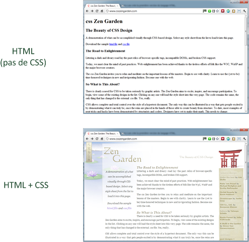

CSS : Cascading Style Sheets
Les feuilles de style en cascade, généralement appelées CSS de l'anglais Cascading Style Sheets, forment un langage informatique qui décrit la présentation des documents HTML et XML. Les standards définissant CSS sont publiés par le World Wide Web Consortium (W3C). Introduit au milieu des années 1990, CSS devient couramment utilisé dans la conception de sites web et bien pris en charge par les navigateurs web dans les années 2000..
Son histoire
Le concept de feuille de style est présent dès l'origine du World Wide Web : le premier navigateur web WorldWideWeb permet de mettre en forme les documents à l'aide de ce qui serait aujourd'hui considéré comme une « feuille de style utilisateur ». De même, les navigateurs Viola en 1992 et Harmony en 1993 recourent à un mécanisme similaire permettant de déterminer le rendu des polices de caractères, des couleurs ou de l'alignement du texte.
Il ne s'agit cependant pas de styles déterminés par l'auteur du document. HTML ne comportant pas non plus d'éléments de présentation dans ses premières années, une pression croissante s'exerce alors pour que les navigateurs permettent aux auteurs de déterminer eux-mêmes la présentation des pages web3, dans une démarche issue de la publication imprimée électronique.
C'est dans ce contexte, en 1994-1995, que le tout nouveau Netscape Navigator introduit les premiers éléments HTML de présentation à l'initiative de Marc Andreessen, tandis qu'apparaissent concurremment les premières propositions de styles externes

Le visuel
Ci-dessous les exemples de ce que l'on peut faire en CSS et surtout visualiser en quoi cela est utile
